산업위생관리산업기사 (2010-07-25 기출문제)
1과목: 산업위생학 개론
1. 직장에서 당면문제를 진지한 태도로 해결하지 않고 현재보다 낮은 단계의 정신 상태로 되돌아가려는 행동반응을 나타내는 부적응 현상을 뭥싱라고 하는가?
- 작업도피(evasion)
- 체념(resignation)
- 퇴행(degeneration)
- 구실(pretext)
(정답률: 59%)

2. 다음 중 근골격계질환을 예방하기 위한 개선사항으로 적절하지 않은 것은?
- 반복적인 작업을 연속적으로 수행하는 근로자에게는 집중력 향상을 위해 해당 작업 이외의 작업을 중간에 넣지 말아야 한다.
- 반복의 점도가 심한 경우에는 공정을 자동화하거나 다수의 근로자들이 교대하도록 하여 한 근로자의 반복작업의 시간을 가능한 한 줄이도록 한다.
- 작업대의 높이는 작업정면을 보면서 팔꿈치 각도가 90도를 이루는 자세로 작업할 수 있도록 조절하고 근로자와 작업면의 각도 등을 적절히 조절할 수 있도록 한다.
- 작업영역은 정상작업영역 이내에서 이루어지도록 하고 부득이한 경우에 한해 최대작업영역에서 수행하되 그 작업이 최소화되도록 한다.
(정답률: 82%)
3. 다음 중 석재공장, 주물공장 등에서 발생하는 유리규산이 주원인이 되는 진폐의 종류는?
- 연폐증
- 활석폐증
- 규폐증
- 석면폐증
(정답률: 82%)
4. 상시근로자수가 600명인 A 사업장에서 연간 25건의 재해로 30명의 시상자가 발생하였다. 이 사업장의 도수율은 약 얼마인가? (단, 1일 9시간씩 1개월에 20일을 근무하였다.)
- 17.36
- 19.29
- 20.83
- 23.15
(정답률: 77%)
5. methyl chloroform(TLV=350ppm)을 1일 12시간 작업할 때 노출기준을 Brife & Scala 방법으로 보정하면 몇 ppm으로 하여야 하는가?
- 150
- 175
- 200
- 250
(정답률: 70%)
6. 다음 중 작업대사율(RMR)을 구하는 식으로 옳은 것은?
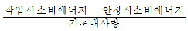
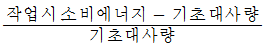
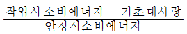
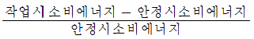
(정답률: 69%)
7. 다음 중 산업위생의 정의에 포함되지 않는 산업위생 전문가의 활동은?
- 지역주민의 혈액을 직접채취하고 생체시료 중의 중금속을 분석한다.
- 지하 상가 등에서 공기 시료 등을 채취하여 유해인자를 조사한다.
- 지역 주민의 건강의식에 대하여 설문지로 조사한다.
- 특정 사업장에서 발생한 직업병의 사회적인 영향에 대하여 조사한다.
(정답률: 73%)
8. 다음 중 산업위생전문가로서의 책임에 관한 내용과 가장 거리가 먼 것은?
- 기업체의 기밀은 누설하지 않는다.
- 성실성과 학문적 실력면에서 최고 수준을 유지한다.
- 전문적 판단이 타협에 의하여 좌우될 수 있는 경우는 확실한 근거로 전문적인 견해를 가지고 개입한다.
- 과학적 방법의 적용과 자료의 해석에서 객관성을 유지한다.
(정답률: 85%)
9. 다음 중 영상표시단말기(VDT)의 취급에 관한 설명으로 틀린 것은?
- 화면상의 문자와 배경과의 휘도비(contrast)를 높인다.
- 작업 면에 도달하는 빛의 각도를 화면으로부터 45°이내가 되도록 조면 및 채광을 제한한다.
- 작업장 주변 환경의 조도를 화면의 바탕 색상이 검정색 계통일 때 300~500Lux로 유지한다.
- 영상표시단말기 작업을 주목적으로 하는 작업실 내의 온도를 18~24℃, 습도는 40~70%를 유지 하여야 한다.
(정답률: 50%)
10. 다음 중 교대체의 운영방법으로 적절하지 않은 것은?
- 12시간 교대제를 우선적으로 적용한다.
- 야근은 2~3일 이상 연속하지 않는다.
- 야근의 교대시간은 심야에 하지 않는다.
- 3조 3교대의 연속근무는 가급적 피한다.
(정답률: 92%)
11. 다음 중 혐기성 대사에서 혐기성 반응에 의해 에너지를 생산하지 않는 것은?
- 아데노신상인산(ATP)
- 크레아틴인산(CP)
- 포도당
- 지방
(정답률: 93%)
12. 25℃, 1기압 상태에서 톨루엔(분자량 92) 50ppm은 약 몇 mg/m3인가?
- 92
- 188
- 376
- 411
(정답률: 64%)
13. 다음 중 산업위생의 역사에 관한 설명으로 옳은 것은?
- 역사상 최초로 기록된 직업병은 수은중독이다.
- 최초의 직업성 암으로 보고된 것은 폐암이다.
- 최초로 보고된 직업성 암의 원인물질은 납이었다.
- 산업보건에 관한 법률로서 실제로 효과를 거둔 최초의 법은 영국의 “공장법”이다.
(정답률: 62%)
14. NIOSH lifting guide에서 모든 조건이 최적의 작업상태라고 할 때 권장되는 최대 무게(kg)는 얼마인가?
- 18
- 23
- 30
- 40
(정답률: 56%)
15. 전신피로의 정도를 평가하려면 작업종료 후 심박수(Heart Rate)를 측정하여 이용한다. 다음 중 가장 심한 전신 피로상태로 판단할 수 있는 경우는? (단, HR1은 종료 후 30~60초 사이의 평균심박수이고, HR2은 종료 후 60~90초 사이의 평균심박수이고, HR3은 종료 후 150~180초 사이의 평균심박수이다.)
- HR1이 120이고, HR3와 HR2의 차이가 15인 경우
- HR1이 90이고, HR3와 HR2의 차이가 15인 경우
- HR1이 120이고, HR3와 HR2의 차이가 5인 경우
- HR1이 90이고, HR3와 HR2의 차이가 5인 경우
(정답률: 39%)
16. 다음 중 산업안전보건법상 강렬한 수음작업에 해당하는 작업은?
- 90dB 이상의 소음이 1일 4시간 이상 발생되는 작업
- 95dB 이상의 소음이 1일 2시간 이상 발생되는 작업
- 100dB 이상의 소음이 1일 1시간 이상 발생되는 작업
- 110dB 이상의 소음이 1일 30분 이상 발생되는 작업
(정답률: 알수없음)
17. 산업안전보건법상 보건관리자의 직무에 해당하지 않는 것은? (단, 기타 일반적인 작업관리 및 작업환경관리에 관한 사항은 제외한다.)
- 물질안전보건자료의 게시 또는 비치
- 근로자의 건강관리, 보건교육 및 건강증진 지도
- 직업성 질환 발생의 원인 조사 및 대책 수립
- 산업재해 발생의 원인 조사 및 재발 방지를 위한 기술적 지도ㆍ조언
(정답률: 29%)
18. 다음 중 전신피로의 생리학적 원인과 가장 거리가 먼 것은?
- 산소 공급 부족
- 혈중 젖산 농도의 감소
- 혈중 포도당 농도의 저하
- 근육내 글리코겐량의 감소
(정답률: 60%)
19. 산업안전보건법의 “화학물질 및 물리적인자의 노출기준”에서 정한 노출기준 표시단위로 잘못된 것은?
- 증기: mg/m3
- 석면분진 : 개수/m3
- 분진: mg/m3
- 고온: WBGT(℃)
(정답률: 60%)
20. 자극취가 있는 무색의 수용성 가스로 건축물에 사용되는 단열재와 섬유 옷감에서 주로 발생되고, 눈과 코를 자극하며 동물실험결과 발암성이 있는 것으로 나타난 실내 오염물질은?
- 황상화물
- 벤젠
- 라돈
- 포름알데히드
(정답률: 84%)
2과목: 작업환경측정 및 평가
21. 감각의 포집효율이 90%인 임핀저 2개를 직렬 연결하여 시료를 채취하는 경우 최종 얻어지는 포집효율은?
- 92.0%
- 95.0%
- 96.0%
- 99.0%
(정답률: 34%)
22. 공기 중 납의 과거 농도가 0.01mg/m3으로 알려진 축전지 제조공장의 근로자 노출농도를 측정하고자 한다. 정량한계(LOQ)가 5μg인 기기를 이용하여 분석코자 할 때 채취하여야할 최소의 공기량은?
- 5L
- 50L
- 500L
- 5m3
(정답률: 59%)
23. 검지관의 장단점에 대한 설명으로 옳지 않은 것은?
- 사전에 측정대상물질의 동정이 불가능한 경우에 사용한다.
- 다른 방해물질의 영향을 받기 쉬워 오차가 크다.
- 민감도가 낮아 비교적 고농도에서 적용한다.
- 다른 측정방법이 복잡하거나 빠른 측정이 요구될 때 사용할 수 있다.
(정답률: 64%)
24. 어떤 작업장에서 톨루엔을 활성탄관을 이용하여 0.2L/분으로 60분 동안 시료를 포집하여 분석한 결과 활성탄관의 앞 층에서 1.2mg, 뒷 층에서 0.1mg씩 검출되었다. 탈착효율이 100%라고 할 때 공기 중 농도는? (단, 파과, 공시료는 고려하지 않음)
- 58.3mg/m3
- 108.3mg/m3
- 158.3mg/m3
- 208.3mg/m3
(정답률: 75%)
25. 폐포에 침착할 때 독성을 일으킬 수 있는 물질로서 평균 입자의 크기가 4㎛인 입자상 물질은? (단, ACGIH 기준)
- 흡입성 입자상 물질
- 흉곽성 입자상 물질
- 복합성 입자상 물질
- 호흡성 입자상 물질
(정답률: 79%)
26. 한 작업장의 분진농도를 측정한 결과, 2.3, 2.2, 2.5, 5.2, 3.3mg/m3이였다. 이 작업장 분진농도의 기하평균 값은?
- 약 2.83mg/m3
- 약 2.93mg/m3
- 약 3.13mg/m3
- 약 3.23mg/m3
(정답률: 알수없음)
27. 유해물질 농도를 측정한 결과 벤젠 6ppm(노출기준 10ppm), 톨루엔 64ppm(노출기준 100ppm), n-헥산 12ppm(노출기준 50ppm)이었다면 이들 물질의 복합 노출지수(Exposure lndex)는? (단, 상가 작용 기준)
- 1.26
- 1.48
- 1.64
- 1.82
(정답률: 42%)
28. 태양이 내리쬐지 않는 옥외 작업장에서 자연습구온도가 24℃이고 흑구온도가 26℃이라면 작업환경의 WBGT는?
- 21.6℃
- 22.6℃
- 23.6℃
- 24.6℃
(정답률: 73%)
29. 0.3N-K2Cr2O7(분자량 294.18) 500mL을 만들 때 K2Cr2O7의 필요량은?
- 2.1g
- 4.9g
- 6.3g
- 7.4g
(정답률: 15%)
30. 1000Hz 순음의 음의 세기레벨 40dB의 음의 크기로 정의 되는 것은?
- 1 SIL
- 1 NRN
- 1 phon
- 1 sone
(정답률: 65%)
31. 변이계수에 관한 설명으로 옳지 않은 것은?
- 통계집단의 측정값들에 대한 균일성, 정밀성 정도를 표현한다.
- 변이계수는 ‘%’로 표현된다.
- 단위가 서로 다른 집단이나 특성값의 상호 산포도를 비교하는데 이용될 수 있다.
- 변이계수=(산술평균/표준편차)×100로 계산된다.
(정답률: 50%)
32. 입경이 14㎛이고 밀도가 1.5g/∝cm3인 입자의 침강속도는?
- 0.95cm/sec
- 0.88cm/sec
- 0.72cm/sec
- 0.64cm/sec
(정답률: 87%)
33. 개인 시료 포집기로 분당 1L로 6시간 측정한 후 여지를 산 처리하여 시험용액 100mL로 만든 후 시료액 50mL를 취해 정량 분석하니 Pb 이 2.5μg/50mL 이었다면 작업환경 중 Pb의 농도(mg/m3)는?
- 0.034
- 0.064
- 0.0102
- 0.0139
(정답률: 50%)
34. 소음의 음압도(SPL)의 산정식으로 옳은 것은? (단, P=대상음의 음압 실효치, P0=최소 음압 실효치)
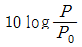
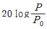
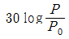
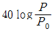
(정답률: 80%)
35. 중심주파수가 2000Hz일 때 1/1 옥타브 밴드의 주파수 범위로 옳은 것은? (단, 하한 주파수 – 상한 주파수)
- 1010Hz~2020Hz
- 1212Hz~2424Hz
- 1414Hz~2828Hz
- 1515Hz~2929Hz
(정답률: 54%)
36. 작업장 내 공기 중 아황산가스(SO2)의 농도가 40ppm일 경우 이 물질의 농도를 용적 백분율(%)로 표시하면 얼마인가? (단, SO2 분자량=64)
- 4%
- 0.4%
- 0.04%
- 0.004%
(정답률: 59%)
37. 사업장의 어떠한 부서에 70dB와 80dB의 소음이 발생되는 장비가 각각 설치되어 있다. 이 장비 2대가 동시에 가동할 때 발생되는 소음의 강도(음압레벨)는 몇 dB인가?
- 80.4
- 82.4
- 84.5
- 86.6
(정답률: 59%)
38. 투과 퍼센트가 50%인 경우 흡광도는?
- 0.65
- 0.52
- 0.43
- 0.30
(정답률: 85%)
39. 불꽃방식의 원자흡광광도계(AAS)의 장단점에 관한 설명과 가장 거리가 먼 것은?
- 가격이 유도결합 플라스마 원자발광분석기(ICP)보다 저렴하다.
- 분석시간이 흑연로장치에 비하여 적게 소요된다.
- 고체시료의 경우 전처리에 의하여 매트릭스를 제거해야 한다.
- 적은 양의 시료를 가지고 동시에 많은 금속을 분석할 수 있다.
(정답률: 40%)
40. 500mL 용량의 뷰렛을 이용한 비누거품미터의 거품 통과시간을 3번 측정한 결과, 각각 10.5초, 10초, 9.5초였다. 이 개인시료포집기의 포집유량은? (단, 기타 조건은 고려하지 않음)
- 0.3L/분
- 3L/분
- 0.5L/분
- 5L/분
(정답률: 55%)
3과목: 작업환경관리
41. 감염에 따른 기포 형성량을 좌우하는 요인과 가장 거리가 먼 것은?
- 조직에 용해된 가스량
- 혈류를 변화시키는 상태
- 강압 속도
- 기포 순환 주기
(정답률: 38%)
42. 다음 중 방사선에 감수성이 가장 낮은 인체 조직은?
- 임파구
- 골수
- 혈관
- 눈의 수정체
(정답률: 62%)
43. 고압에 의한 장해를 방지하기 위하여 인공적으로 만든 호흡용 혼합가스인 헬륨-산소온합가스에 관한 설명으로 옳지 않은 것은?
- 호흡저항이 적다.
- 고압에서 마취작용이 강하여 심해 잠수에는 사용하기 어렵다.
- 헬륨은 체외로 배출되는 시간이 질소에 비하여 50%정도 밖에 걸리지 않는다.
- 헬륨은 질소보다 확산속도가 크다.
(정답률: 79%)
44. 파장으로서 방사선의 특징으로 옳지 않은 것은?
- 빛의 속도로 이동한다.
- 물질과 만나면 흡수 또는 산란된다.
- 자장이나 전장의 영향이 크다.
- 간섭을 일으킨다.
(정답률: 62%)
45. 일반적으로 작업장 신축 시 창의 면적은 바닥 면적의 어느 정도가 적당한가?
- 1/2 ~ 1/3
- 1/3 ~ 1/4
- 1/5 ~ 1/7
- 1/7 ~ 1/9
(정답률: 54%)
46. 출력이 1.0W인 작은 음원에서 10m 떨어진 점의 음압레벨(SPL)은? (단, 무지형성 정음원이며 자유공간에 있다고 가정함)
- 83dB
- 89dB
- 93dB
- 98dB
(정답률: 75%)
47. 다음의 전리방사선 중 투과력이 가장 강한 것은?
- 알파선
- 중성자
- XTJS
- 감마선
(정답률: 86%)
48. 작업환경개선 대책 중 대치의 방법으로 옳지 않은 것은?
- 급속제품 도장용으로 유기용제를 수용성 도료로 전환한다.
- 아소염료의 합성에서 원료로 벤젠을 사용 한던 것을 방부기능의 클로로폼으로 바꾼다.
- 분체의 원료는 입자가 큰 것으로 바꾼다.
- 금속제품의 탈지에 틀리클로르에틸렌을 사용하던 것을 계면활성제로 전환한다.
(정답률: 36%)
49. 방독면의 정화통 능력이 사염화탄소 0.4%dp 대해서 표준유효시간 100분인 경우, 사염화탄소의 농도가 0.1%인 환경에서 사용 가능한 시간은?
- 100분
- 200분
- 300분
- 400분
(정답률: 77%)
50. 다음의 가동 중인 시설에 대한 작업환경대책 중 성격이 다른 것은?
- 작업시간 변경
- 작업량 조절
- 순환 배치
- 공정 변경
(정답률: 39%)
51. 다음 중 청력보호구인 귀마개의 장점이 아닌 것은?
- 작아서 휴대하기가 편리하다.
- 고개를 움직이는데 불편함이 없다.
- 고온에서 착용하여도 불편함이 없다.
- 짧은 시간 내에 제대로 착용할 수 있다.
(정답률: 67%)
52. 방진마스크에 관한 설명으로 옳지 않은 것은?
- 종류에는 격리식과 직겨식, 면체여과식이 있다.
- 비휘발성 입자에 대한 보호가 가능하다.
- 필터 재질로는 활성탄이 가장 많이 사용된다.
- 포집효율이 높고 흡기, 배기저항이 낮은 것이 좋다.
(정답률: 46%)
53. 이상기압에 관한 설명으로 옳지 않은 것은?
- 수면 하에서 대기압을 포함한 압력을 절대압이라 한다.
- 공기 중의 질소 가스는 2기압 이상에서 마취 증세가 나타난다.
- 고공성 페수종은 어른보다 어린이에게 많이 일어난다.
- 고고성 폐수종은 고공 순화된 사람이 해면에 돌아올 EO에 흔히 일어난다.
(정답률: 알수없음)
54. 출력이 0.001W인 기계에서 나오는 파워레벨(PWL)은 몇 dB인가?
- 80dB
- 90dB
- 100dB
- 110dB
(정답률: 31%)
55. 적외선에 관한 설명으로 옳지 않은 것은?
- 적외선은 대부분 화학작용을 수반하여 가시광선과 자외선 사이에 있다.
- 적외선에 강하게 노출되면 안검록염, 각막염, 홍채위축, 백내장 등 장애를 일으킬 수 있다.
- 일명 열선이라고 하며 온도에 비례하여 적외선을 복사한다.
- 적외선은 가시광선보다 긴 파장으로 가시광선과 가ᄁᆞ운 폭을 근적외선이라 한다.
(정답률: 70%)
56. 방진재인 공기스프링에 관한 설명으로 옳지 않은 것은?
- 부하능력이 광범위하다.
- 구조가 간단하고 시설비가 저렴하다.
- 사용진폭이 적은 것이 많으므로 별도의 damper가 필요한 경우가 많다.
- 하중의 변화에 따라 고유진동수를 일정하게 유지할 수 있다.
(정답률: 50%)
57. 다음 중 귀 덮개의 장단점으로 옳지 않은 것은?
- 귀마개보다 개인차가 크다.
- 귀에 이상이 있을 때에도 사용할 수 있다.
- 고온작업장에서 착용하리가 어렵다.
- 착용법이 틀리는 일이 적다.
(정답률: 60%)
58. 고열작업환경에서 발생되는 열경련의 주요 원인은?
- 고온 순환 미흡에 따른 혈액순환 저하
- 고열에 의한 순환기 부조화
- 신체의 염분 손실
- 뇌온도 및 체온 상승
(정답률: 62%)
59. 광원으로부터 나오는 빛의 세기인 광도의 단위는?
- 촉광
- 루엔
- 럭스
- 폰
(정답률: 42%)
60. 만성장해로서 고압환경에 반복 노출될 때에 가장 일어나기 쉬운 속말증이며 질소 기포가 뼈의 소동액을 막아서 일어나고 해당 부위에 경색이 일어나는 것은?
- 골응축
- 비감염성 골괴사
- 종격기종
- 혈관전색
(정답률: 40%)
4과목: 산업환기
61. A작업장에서는 1시간에 0.5L의 메틸에틸케톤(MEK)이 증발되고 있다. MEK의 TLV가 200ppm 이라면 이 작업장 전체를 환기시키기 위한 필요환기량(m3/min)은 약 얼마인가? (단, 주위온도는 25℃, 1기압 상태이며, MEK의 분자량은 72.1, 비중은 0.8⑤, 안전계수는 3이다.)
- 34.12
- 68.25
- 83.56
- 134.54
(정답률: 31%)
62. 스프레이 도장, 용접, 도금 등 약간의 공기 움직임이 있고 낮은 속도로 오염물질을 배출되는 작업조건에 있어 제어속도의 범위로 가장 적절한 것은? (단, ACGIH에서의 권고 사항을 기준으로 한다.)
- 0.25~0.5m/s
- 0.5~1.0m/s
- 1.0~2.5m/s
- 2.5~10m/s
(정답률: 20%)
63. 점흡인의 경우 후드의 흡인에 있어 개구부로부터 거리가 멀어짐에 따라 속도는 급격히 감소하는데 이때 개구면의 직경만큼 떨어질 경우 후드 흡인기록의 속도는 약 어느 정도로 감소하겠는가?
- 1/10
- 1/5
- 1/4
- 1/2
(정답률: 50%)
64. 다음 중 전체환기의 설치 조건으로 적절하지 않은 것은?
- 오염물질의 독성이 높은 경우
- 오염물질의 발생량이 적은 경우
- 오염물질이 널리 퍼져 있는 경우
- 오염물질이 시간에 따라 균일하게 잘생하는 경우
(정답률: 73%)
65. 사이클론의 집진율을 높이는 방법으로 분진박스나 호퍼부에서 처리가스의 일부를 흡인하여 사이클론내의 난류 현상을 억제시킴으로써 집진된 먼지의 비산을 방지시키는 방법은 어떤 효과를 이용하는 것인가?
- 블로우다운 효과
- 멀티 사이클론 효과
- 원심력 효과
- 중력침강 효과
(정답률: 알수없음)
66. 직경이 180mm인 덕트 내 정압은 –58.5mmH2O, 전압은 23.5mmH2O이다. 이때 공기유량은 약 몇 m3/min인가?
- 42
- 56
- 69
- 81
(정답률: 27%)
67. 다음 중 국소배기 장치의 설계시 후드의 성능을 유지하기 위한 방법과 가장 거리가 먼 것은?
- 제어속도의 유지
- 주위 온도를 고려한 설계
- 후드의 개구면적 확대
- 송풍기의 용량 확보
(정답률: 44%)
68. 다음 중 맹독성 물질을 제어하는데 가장 적합한 후드의 형태는?
- 포위식
- 외부식 축방형
- 외부식 슬롯형
- 레시버식
(정답률: 59%)
69. 다음 중 오염이 높은 작업장의 실내압으로 가장 적정한 것은?
- 양압(+) 유지
- 음압(-) 유지
- 정압 유지
- 동압 유지
(정답률: 47%)
70. 고농도의 분진이 발생되는 작업장에서는 후드로 유입된 공기가 공기정화장치로 유입되기 전에 입경과 비중이 큰 입자를 제거할 수 있도록 전처리 장치를 둔다. 전처리를 위한 집진기는 일반적으로 효율이 비교적 낮은 것을 사용하는데, 다음 중 전처리 장치로 적합하지 않은 것은?
- 중력 집진기
- 원심력 집진기
- 관성력 집진기
- 여과 집진기
(정답률: 28%)
71. 다음 중 송풍기의 소요동력을 계산하는데 필요한 인자로 볼 수 없는 것은?
- 회전수
- 송풍기의 효율
- 풍량
- 송풍기 전압
(정답률: 34%)
72. 습한 납 분진, 천 분진, 주물사, 요업재료 등 일반적으로 무겁고 습한 분진의 반송속도(m/s)로 가장 적당한 것은?
- 5~10
- 15
- 20
- 25 이상
(정답률: 25%)
73. 다음 중 필요 송풍량을 가장 적게 할 수 있는 슬롯형 후드는?
- 1/4원주형
- 1/2원주형
- 3/4원주형
- 전 원주형
(정답률: 50%)
74. 다음[보기]를 이용하여 일반적인 국소배기장치의 설계 순서를 가장 적절하게 나열한 것은?
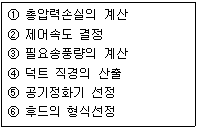
- ⑥→②→③→④→⑤→①
- ②→③→①→④→⑤→⑥
- ③→②→④→①→⑥→⑤
- ⑥→③→②→①→④→⑤
(정답률: 42%)
75. 다음 중 레이놀즈수(Re)를 구하는 식으로 옳은 것은? (단, ρ는 공기밀도, d는 덕트의 직경, V는 공기유속, μ는 공기의 점성계수이다.)
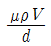
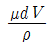
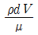
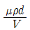
(정답률: 63%)
76. 후드의 유입손실계수가 0.8 덕트 내의 공기흐름속도가 20m/s일 때 후드의 유입압력손실은 약 몇 mmH2O인가? (단, 공기의 비중량은 1.2kgf/m3이다.)
- 14
- 16
- 20
- 24
(정답률: 10%)
77. 21℃, 1기압하에서 벤젠 1.5L가 증발할 때 발생하는 증기의 용량은 약 몇 L 정도 되겠는가? (단, 벤젠의 분자량은 78.11, 비중은 0.879 이다.)
- 3⑤.1
- 406.8
- 457.7
- 542.2
(정답률: 47%)
78. 환기시설을 효율적으로 운영하기 위해서는 공기공급 시스템이 필요한데 그 이유로 적절하지 않은 것은?
- 국소배기장치를 적정하게 작동하기 위해서이다.
- 작업장의 교차기류를 생성하기 위해서이다.
- 근로자에게 영향을 미치는 냉각기류를 제거하기 위해서이다.
- 실외공기가 정화되지 않은 채 건물 내로 유입되는 것을 막기 위해서이다.
(정답률: 38%)
79. 전자부품을 납땜하는 공정에 플랜지가 부탁되지 않은 외부식 국소배기장치를 설치하고자 한다. 후드의 규격은 400×400mm, 제어거리를 20cm, 제어속도를 0.5m/s, 그리고 반송속도를 1200m/min으로 하고자 할 때 덕트의 직경은 약 몇 m로 해야 하는가?
- 0.018
- 0.180
- 0.134
- 0.013
(정답률: 50%)
80. 다음 중 송풍기에 관한 설명으로 틀린 것은?
- 프로펠러 송풍기는 구조가 가장 간단하고, 적은 비용으로 많은 양의 공기를 이송시킬 수 있다.
- 방사 날개형 송풍기는 평판형 송풍기라고도 하며 고농도 분진함유공기나 부식성이 강한 공기를 이송시키는데 많이 이용된다.
- 전향 날개형 송풍기는 동일 송풍량을 발생시키기 위한 임펠러 회전속도는 상대적으로 낮기 때문에 소음문제가 거의 발생하지 않는다.
- 후향 날개형 송풍기는 회전날개가 회전방향 반대편으로 경사지게 설계되어 있어 충분한 압력을 발생시킬 수 있고, 전향 날개형 송풍기에 비해 효율이 떨어진다.
(정답률: 47%)